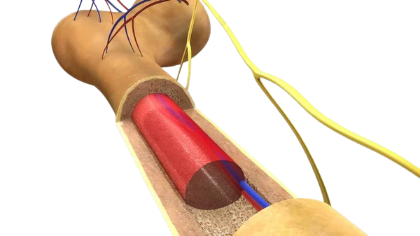

°Soporte: el esqueleto funciona como una estructura rígida, que da forma al cuerpo.
°Movimiento: las articulaciones, que son las uniones entre dos huesos, hacen posibles los movimientos. Además, los músculos se insertan en los huesos.
ESQUELETO HUMANO
Está compuesto por un total de 206 huesos...
FUNCIONES
Sostiene y protege los tejidos blandos y los órganos internos del cuerpo...
CLASIFICACIÓN
Los huesos se clasifican en 5 tipos diferentes...
ESTRUCTURA
Están compuestos de tejido óseo y tejido cartilaginoso...
PARTES
Se divide en 2 partes principales...
°Protección: muchos de nuestros órganos internos están protegidos por el esqueleto.
°Almacenamiento metabólico: los huesos almacenan sales de calcio y fosfato, y regulan su distribución.
°Producción de células sanguíneas: en el interior de algunos huesos de gran tamaño se encuentra la médula ósea roja, que se encarga de producir células sanguíneas como los leucocitos y los eritrocitos.
